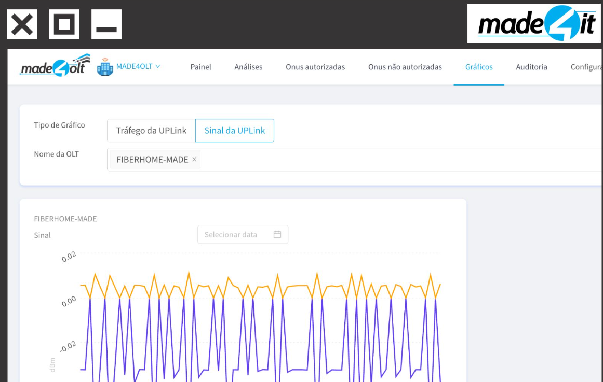
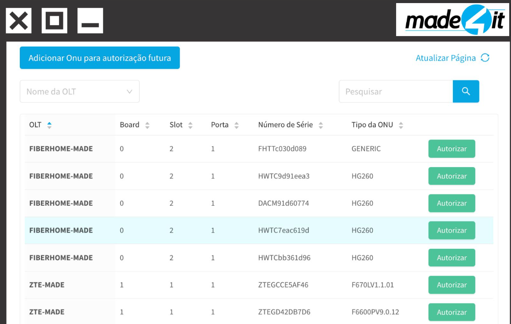
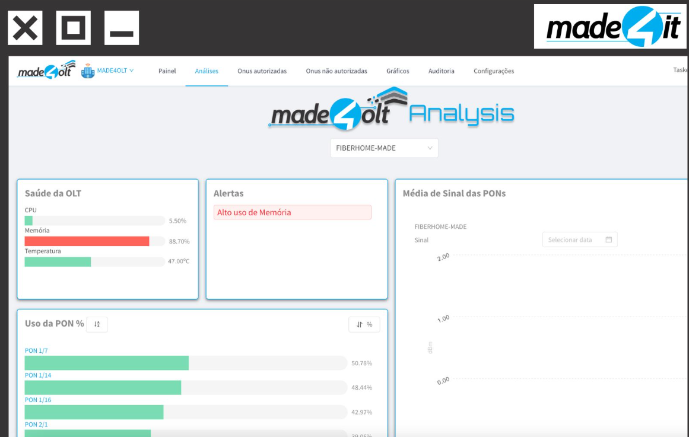
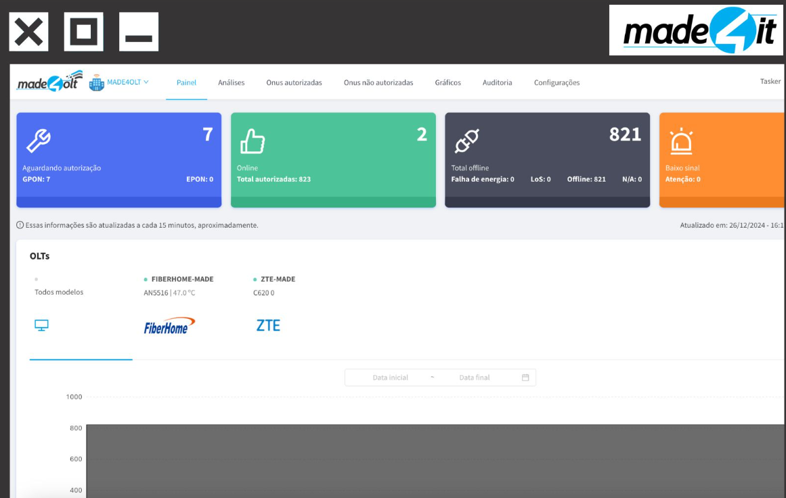
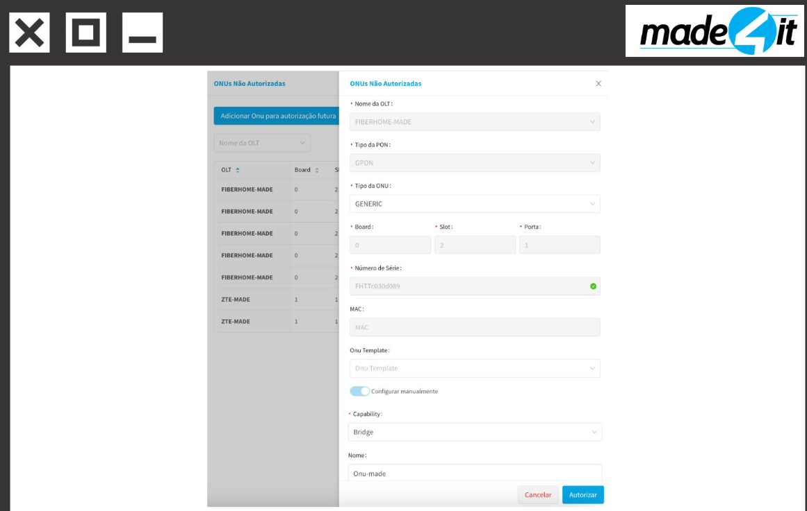
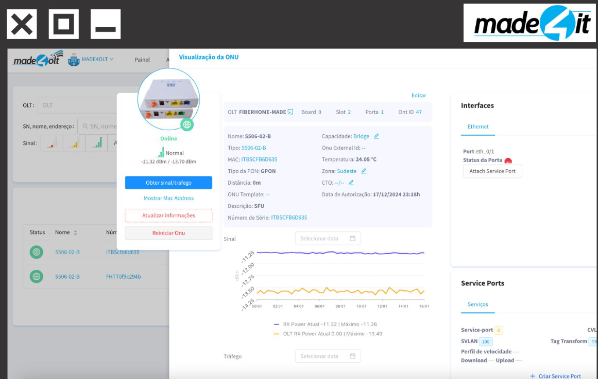
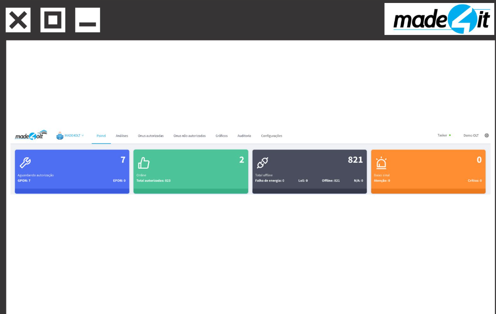
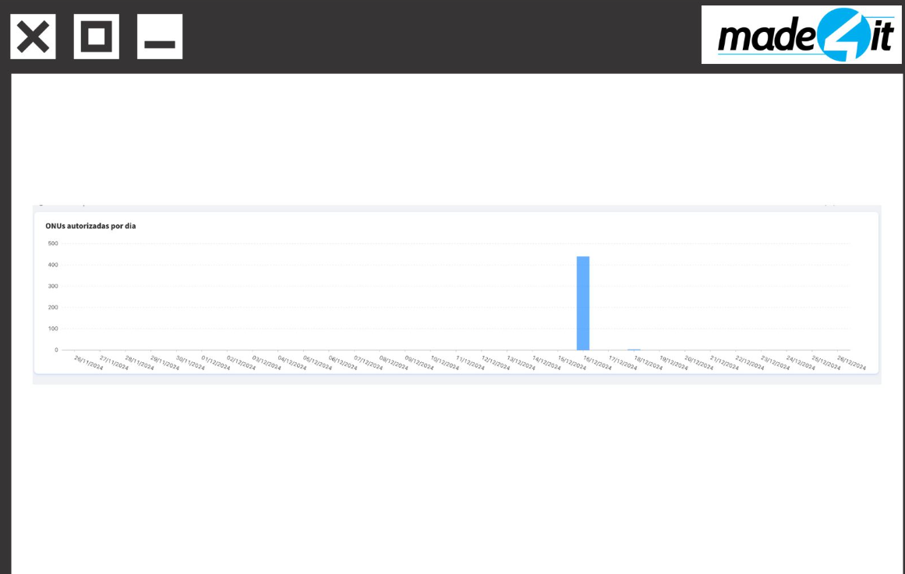
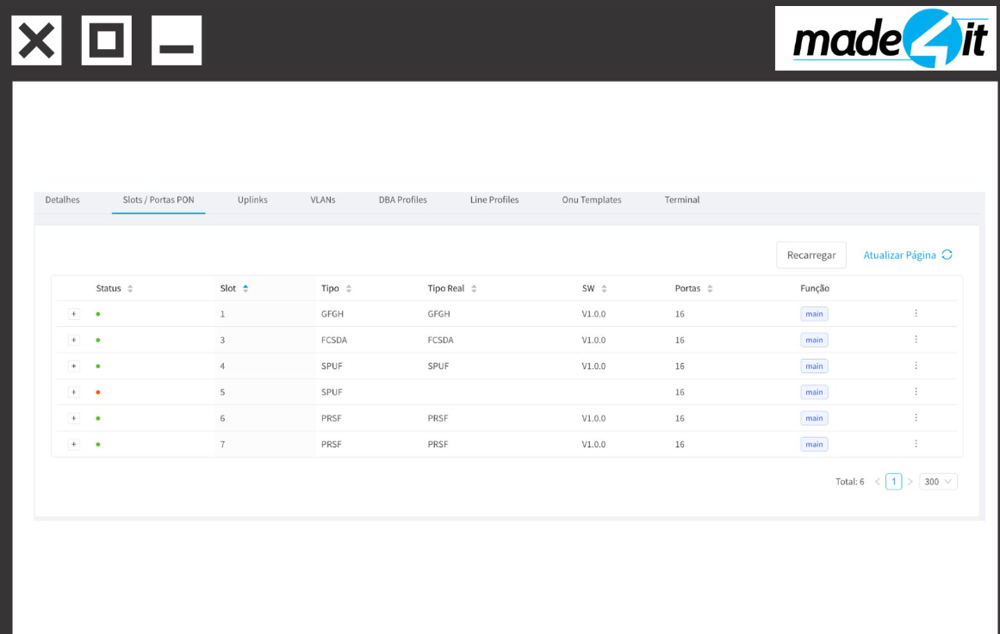
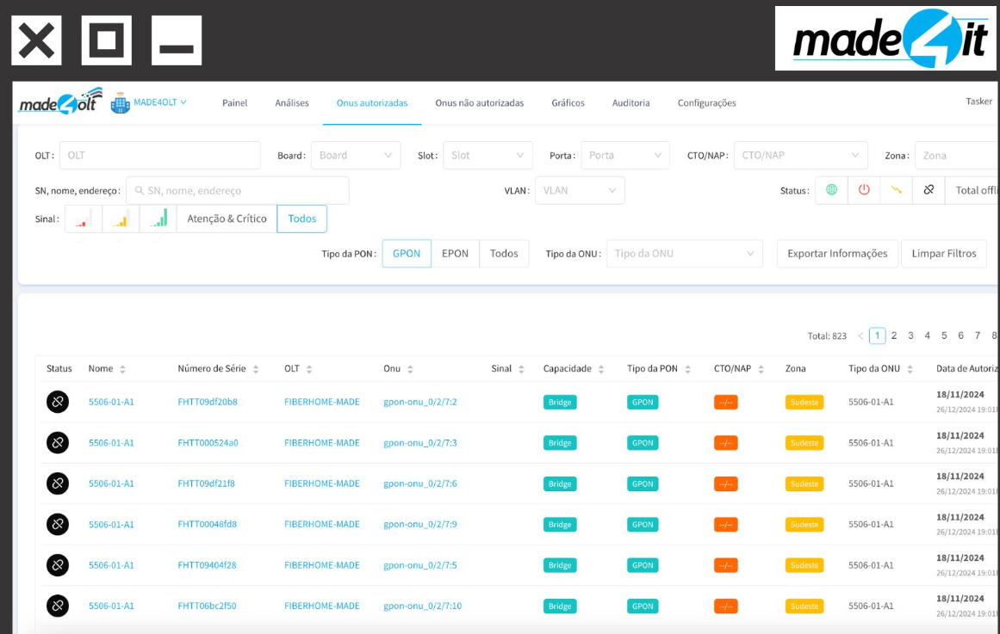

Profile Overview
This section highlights the main focus of each tool...
📊 Made4IT
Strong focus on the ISP experience...
🔧 Aprecomm VNE
Analytical and engineering focus...
☁️ Int6 Smart OLT
Cloud approach focused on ease of use...
🏢 IXC Soft
The absolute ecosystem player...
Interactive Feature Matrix
Select a category on the left menu to explore in detail...
Made4OLT: Automação e Foco em Provedores de Médio e Grande Porte
O Made4OLT, desenvolvido pela Made4it, posiciona-se como uma das soluções mais completas para o gerenciamento de redes ópticas no Brasil. A plataforma foi desenhada para centralizar o registro de OLTs, a criação de perfis de linha (line profiles) e o provisionamento de ONUs através de uma interface web intuitiva, eliminando a necessidade de interação direta com a CLI do equipamento.
A compatibilidade do Made4OLT é um de seus pilares, abrangendo os principais fabricantes que dominam o mercado nacional. A homologação de um equipamento no Made4OLT envolve um processo rigoroso de validação de acesso e portas de firewall, garantindo que todas as funcionalidades de provisionamento via script ou XML funcionem de forma confiável.
| Fabricante |
Modelos/Status |
Recursos Suportados |
| Huawei | Homologado | Provisionamento XML/Script, VLANs, Uplinks |
| ZTE | Homologado | C300/C320, Ativação Trap Mode, Service Ports |
| Fiberhome | Homologado | Templates de ONU, Atualização de Firmware |
| Datacom | Homologado | Monitoramento em Tempo Real, Comandos Iniciais |
| Intelbras | Homologado | Gestão de Perfis, Registro de VLANs |
| Parks | Homologado | Provisionamento de ONUs, Diagnóstico |
| Nokia | Suportado | Gestão de Ativos e Monitoramento |
| Furukawa | Homologado | Configuração de Portas e Line Profiles |
Destaque Técnico: A funcionalidade de "Ativação em Modo Trap" é um diferencial importante. Ela permite que a OLT envie notificações proativas ao sistema sobre eventos de rede, como a desconexão de uma ONU ou falhas de energia, sem a necessidade de o sistema realizar consultas constantes (polling), o que otimiza o uso de recursos de rede. Além disso, o suporte ao provisionamento via XML em equipamentos compatíveis oferece uma camada de segurança e velocidade superior à emulação de scripts CLI tradicionais.
Visualização da Interface (Galeria)
Clique em qualquer imagem para expandir.

Provisioning Interface

Chart: Authorized ONUs / Day

Slots and PON Ports Status

Integrated CLI Terminal

OLT Hardware Details

Distance and Signal Checker

OLT Health and PON Usage

Traffic and Signal Monitoring

Unauthorized ONUs Management

ONU Signal History